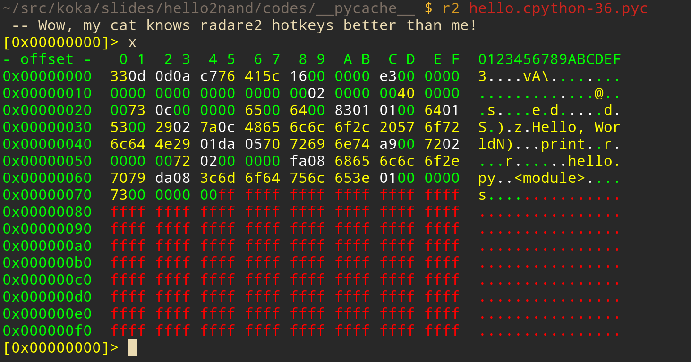

python -c 'print("Hello, World")'

電気/通信専攻
普段はVue/React
趣味でRustでOS書いたりインタプリタ書いたり
プログラムがどのように実行されるのか
CPythonを例に追っていく
print("Hello, World")
print()"Hello, World"ソースコードを意味のあるまとまりの集合に変換する
(e.g.)
我輩は猫である。
→
["我輩", "は", "猫", "で", "ある", "。"]
print() → 関数"Hello, World" → 文字列Parser/構文解析
(e.g.)
["我輩", "は", "猫", "で", "ある", "。"]
→
[
("我輩", 名詞),
("は", 接続詞),
("猫", 名詞),
("で", 助動詞),
("ある", 動詞),
("。", 終端記号)
]
この解析を左から行う→ LL/LR構文解析
意味のあるまとまりの端がどこか
“は” って次にくる文字次第では
名詞になることもあるんじゃない?
“は” の次は “猫”
→ 接続詞やな
→
LL(1)
CPythonのParserはLL(1)
https://devguide.python.org/compiler/
Pythonでの意味のあるまとまりとは
Pythonでは関数も文字列もオブジェクト
全ての根源
typedef struct _object {
// "CPython"のデバッグビルド時に利用
_PyObject_HEAD_EXTRA
// reference count
Py_ssize_t ob_refcnt;
// オブジェクトの型のインスタンスの参照
struct _typeobject *ob_type;
} PyObject;
typedef struct {
PyObject_HEAD
/* A code object, the __code__ attribute */
PyObject *func_code;
/* A dictionary (other mappings won't do) */
PyObject *func_globals;
PyObject *func_defaults;
PyObject *func_kwdefaults;
/* 中略 --- */
} PyFunctionObject;
このオブジェクトが何なのかを示す情報
(e.g)
Pythonでの文字列の扱い
“文字” の “配列”
cpython/include/unicodeobject.h
(unicodeの取扱がごちゃごちゃ書いてあるので省略)
可変長のオブジェクト
typedef struct {
Py_ssize_t ob_refcnt;
struct _typeobject *ob_type;
Py_ssize_t ob_size;
} PyVarObject;
PyObjectとの違い:
Py_ssize_t ob_size;
プログラムはメモリに配置される
Q.有限なメモリ上で
A.
大きさが変わらないオブジェクトは
詰めて並べて,
大きさが変わるオブジェクトは
変わるもの同士まとめて並べる
+----------------------------------+
|不変| → ← | 可変 |
+----------------------------------+
不変の部分: スタック領域
可変の部分: ヒープ領域
PyObject(PYFUNCTYPE) {
引数: PyVarObject(PySlice_Type("Hello, World"))
func_code: // print()の実体
}
+----------------------------------+
|print()| → ← |"Hello, World" |
+----------------------------------+
(今回の”Hello, World”のように
文字列が不変の場合には
スタックに配置されますが、
可変長のオブジェクトであることを強調)